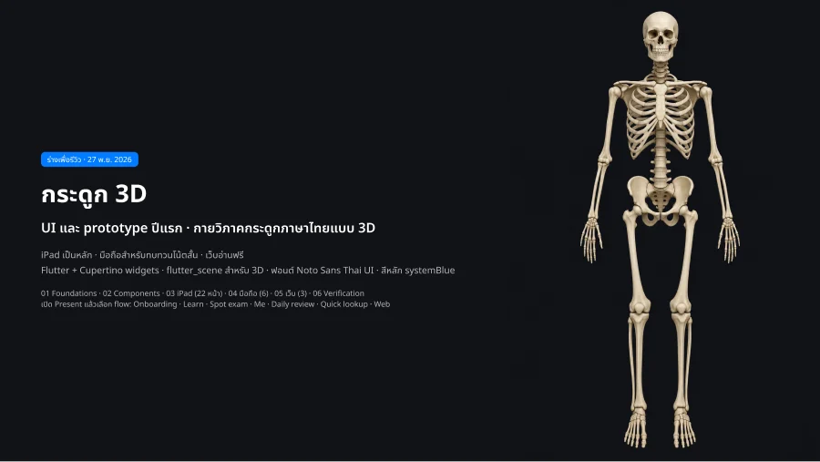

Product design: UI และ prototype ปีแรก

เอกสารชุดนี้อธิบายการออกแบบแอป กระดูก 3D (ชื่อชั่วคราว) ตั้งแต่แนวคิด product, requirement, feature ไปจนถึง UI และ prototype ที่คลิกได้ใน Figma ทุกส่วนอิงจาก แผน product ปีแรก (เสนอ 27 พ.ย. 2026, ยังรอ Jedt ยืนยัน scope) และแนวทางเทคนิคใน ไปป์ไลน์ 3D
สถานะ: ร่างเพื่อรีวิว 27 พ.ย. 2026 · ภาพกระดูกในหน้าจอเป็นภาพ AI ชั่วคราว · ศัพท์ไทย จุดสังเกต และเนื้อหาคลินิกเป็นตัวอย่างที่ต้องให้อาจารย์ตรวจ
ลิงก์หลัก
| อะไร | ลิงก์ |
|---|---|
| ไฟล์ Figma (ทุกหน้า) | https://www.figma.com/design/6wrlr1quIhFyyvoT0bJGgk |
| Prototype iPad (เริ่มที่ onboarding) | https://www.figma.com/proto/6wrlr1quIhFyyvoT0bJGgk?node-id=8-2&starting-point-node-id=8%3A2 |
| Prototype มือถือ (ทบทวนวันนี้) | https://www.figma.com/proto/6wrlr1quIhFyyvoT0bJGgk?node-id=17-2&starting-point-node-id=17%3A2 |
| Prototype เว็บ (ดัชนี) | https://www.figma.com/proto/6wrlr1quIhFyyvoT0bJGgk?node-id=18-270&starting-point-node-id=18%3A270 |
สรุปในหน้าเดียว
- ผู้ใช้: นักศึกษาแพทย์ ทันตแพทย์ พยาบาล เภสัช ปี 1–2 ที่เรียนกายวิภาคกระดูกเป็นภาษาไทย และอาจารย์ที่สอน spot
- แพลตฟอร์ม: iPad เป็นหลัก (เรียนกับโมเดล 3D และฝึกสอบ spot), มือถือเป็นตัวช่วยทบทวนสั้น ๆ (flashcard และโน้ต ไม่มี 3D เต็ม), เว็บสำหรับอ่านฟรีและให้ Google ค้นเจอ
- เทคโนโลยี UI: Flutter ใช้ widget ชุด Cupertino เป็นฐานทั้งหมด สร้าง widget เองเฉพาะที่ Cupertino ไม่มี (หมุด landmark, ชื่อ 3 ภาษา, progress bar, ปุ่มเครื่องมือใน viewport) 3D ใช้ flutter_scene
- หน้าตา: สีหลักเป็น systemBlue แบบเดียวกับ iOS/iPadOS ตามที่ Jedt ขอ, ฟอนต์ Noto Sans Thai UI เพราะ SF Pro ไม่มีอักษรไทย, viewport 3D พื้นมืดเสมอเพื่อให้กระดูกเด่น
- ขนาดงานใน Figma: iPad 22 หน้าจอ, มือถือ 6, เว็บ 3, component 21 ชุดที่ตั้งชื่อตาม widget ของ Flutter, ไอคอน 44 ตัว, ตัวแปรสีมีโหมด Light และ Dark
- Prototype: 104 จุดที่คลิกได้ใน 7 flow (iPad 4, มือถือ 2, เว็บ 1)
- ผลตรวจ: ฟอนต์ สี และ component สอดคล้องกันทุกหน้า พบ contrast ของป้ายสถานะสีเขียวและส้มต่ำ (2.2 : 1) จึงเพิ่มสีข้อความชุด
text/*แก้แล้ว ส่วนที่ยังขาดดูใน ผลตรวจ
เอกสารในส่วนนี้
- Product design: ผู้ใช้ ปัญหา หลักการออกแบบ บทบาทของแต่ละแพลตฟอร์ม และโครงสร้างแอป
- Requirements: requirement ด้าน function และด้านคุณภาพ พร้อมเกณฑ์ยอมรับ
- Features: feature ทั้งหมด ผูกกับหน้าจอ รุ่นที่ปล่อย และฟรีหรือ Pro
- UI design: design system สี ตัวอักษร ระยะ component และการจับคู่กับ Flutter widget
- Prototype: flow ทั้งหมด วิธีเปิด และภาพทุกหน้าจอ
- ผลตรวจความสอดคล้อง: ผลตรวจที่วัดได้ สิ่งที่แก้ไปแล้ว และช่องว่างที่ยังเหลือ
หน้าใน Figma
| หน้า | เนื้อหา |
|---|---|
| 00 Cover | หน้าปกและวิธีเปิด prototype |
| 01 Foundations | สี ตัวอักษร ระยะ มุมโค้ง และภาพ render ตัวอย่าง |
| 02 Components · Flutter Cupertino | component 21 ชุดและไอคอน 44 ตัว |
| 03 iPad (primary) | 22 หน้าจอ 1180 × 820 (iPad Air 11" แนวนอน) |
| 04 Phone companion | 6 หน้าจอ 393 × 852 (iPhone 15/16) |
| 05 Web | 3 หน้าจอ 1440 กว้าง |
| 06 Verification | ตาราง widget mapping และผลตรวจ |